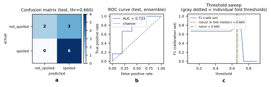
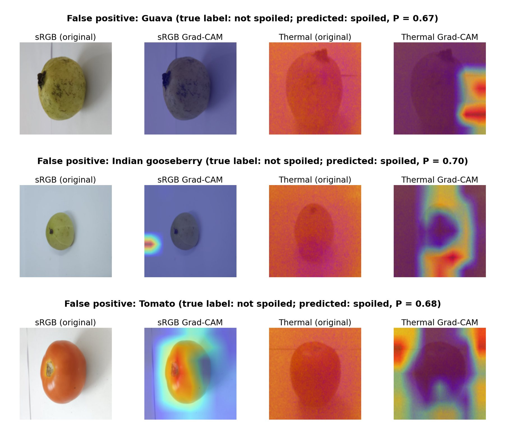
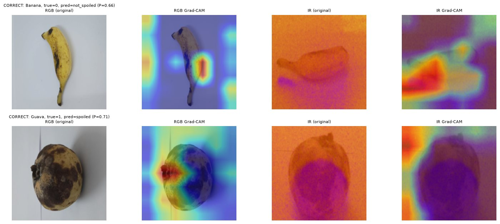
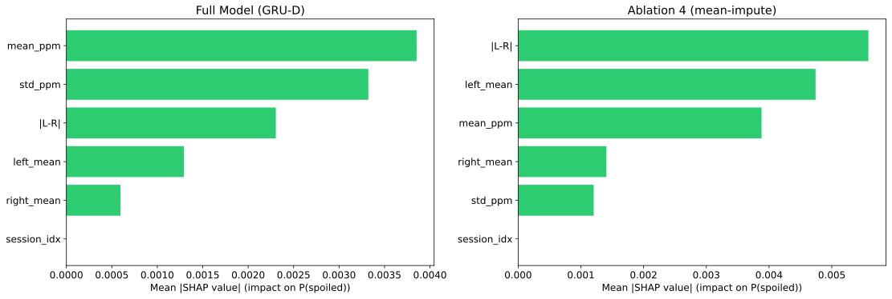
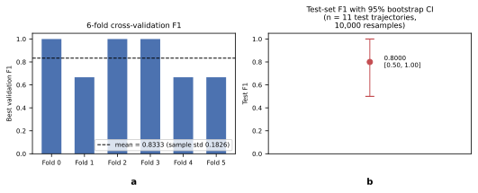

Results
What the model can do, and how sure we can be
Results in the order of the investigations on the Methodology page. Confidence intervals are given wherever they were computed. With 12 specimens and an 11-trajectory test set, every number here should be read together with its uncertainty.
Headline test result
Proposed model, 10-seed ensemble, decision threshold 0.660 calibrated without the test set.
Confusion matrix
Per produce
| Produce | Not spoiled | Spoiled |
|---|---|---|
| Banana | correct | correct |
| Carrot | no test day | correct |
| Guava | false alarm | correct |
| Indian gooseberry | false alarm | correct |
| Mango | correct | correct |
| Tomato | false alarm | correct |
Every spoiled trajectory was caught. The model improves on an always-spoiled guess by 0.094 F1, and all of that improvement comes from correctly clearing two fresh trajectories. Its three mistakes are false alarms on three different produce types, each within 0.04 of the threshold. For a storage room, an early warning that turns out unnecessary costs less than missed spoilage.


Switch a sensor off
To mimic sensor failure, a chosen sensor was switched off on a random share of days, from 0% to 50%, with five random repeats for each of the ten seeds. The proposed model, which simply leaves a missing sensor out of its attention, is compared with early and late fusion baselines that fill missing inputs with the mean.
At 50% missing on the validation set, the proposed model has the highest F1 under thermal, gas and joint failure; early fusion is ahead only when the sRGB camera fails. On the test set it leads in 19 of the 24 sensor-by-level combinations. After a Benjamini–Hochberg correction across all 29 comparisons in this work, five advantages remain significant: gas-only and thermal-only failure against both baselines on validation, and gas-only failure against late fusion on test.
Losing the gas sensor barely affects the proposed model, while both baselines drop. This held on both validation and test. Gas also receives the least attention weight (about 0.22–0.27 against 0.37–0.39 for the cameras), so the two cameras can cover for it.
Losing the sRGB camera hurts the proposed model most: it loses 13.4% of its F1 at 50% missing, against 1.7% and 3.6% for the baselines. Colour seems to carry information the other two sensors cannot replace. The simulation also uses random, independent dropouts, not the long correlated failures real sensors have.
Ablation study
Six alternatives were trained with ten seeds each: four that remove or replace one component and two simpler fusion strategies. The chart shows how each one's ensemble F1 differs from the full model on validation, with a 95% paired-bootstrap interval.
| Configuration | Params (M) | Seed F1 (mean ± s.d.) | Ensemble F1 | Ensemble AUC |
|---|---|---|---|---|
| Full model | 32.47 | 0.813 ± 0.053 | 0.800 | 0.944 |
| No CBAM | 32.19 | 0.823 ± 0.057 | 0.750 | 0.806 |
| No cross-modal attention | 32.47 | 0.767 ± 0.069 | 0.667 | 0.972 |
| LSTM instead of Transformer | 32.34 | 0.732 ± 0.043 | 0.857 | 0.667 |
| Mean imputation instead of GRU-D | 32.47 | 0.815 ± 0.084 | 0.909 | 0.972 |
| Early fusion | 32.06 | 0.740 ± 0.055 | 0.706 | 0.611 |
| Late fusion | 32.14 | 0.702 ± 0.039 | 0.667 | 0.667 |
Every interval crosses zero, so no component can be called necessary or harmful. Two simpler variants even score higher. Two independent training runs of the same full model differ by 0.05 F1 (0.863 vs. 0.813 per-seed validation mean), which is as large as most of these differences. That is why this project's claims are about the whole system and its robustness, not individual components.
The CBAM question, tested directly
Grad-CAM maps raised doubts about whether CBAM helps, so a model with CBAM removed from both cameras was trained from scratch and evaluated on test, in two independent runs.
| Model | Test F1 | Test AUC | Test R² |
|---|---|---|---|
| Full model (with CBAM) | 0.8000 | 0.7333 | 0.0439 |
| No CBAM, run 1 | 0.7500 | 0.4667 | −0.2016 |
| No CBAM, run 2 | 0.7143 | 0.5000 | −0.1607 |
Both runs without CBAM are worse on every metric, with AUC at or below chance. A paired bootstrap on test was not significant (F1 p ≈ 0.53, AUC p ≈ 0.26), so CBAM is kept because two independent runs agree, not because of a significance test.
Choosing the sRGB backbone
Eight backbones were swapped into the full model in place of ConvNeXt-Tiny and trained with ten seeds each. Cost figures are for the complete model with that backbone.
ConvNeXt-Tiny has the highest mean validation F1 (0.791), just ahead of Swin-Tiny (0.789). Its margin over the four closest candidates is not significant, and its lead over the three weakest does not survive correction. The model with EfficientNet-B0 reaches 0.770 with about a quarter of the parameters, a sixth of the compute and half the latency, which makes it the obvious choice for low-power hardware. DINOv2 was used fully frozen, so its result also reflects a different training setup.
A produce type the model has never seen
In leave-one-fruit-out testing the model is trained on five produce types and tested on both trajectories of the sixth. Each dot is one seed; it is filled when that seed got both held-out trajectories right. The right column is the ten-seed ensemble.
The ensemble got both held-out trajectories right only for tomato. Indian gooseberry, with the second-most training days, generalised worst (mean seed F1 0.17), which suggests that how distinctive a produce looks matters more than how much data there is. The gap between this and the main test result also suggests the main result benefits from having seen earlier days of the same specimens.
What the model looks at






Attention between sensors
Averaged over ten seeds at each trajectory's final day, cross-modal attention gives the gas sensor 0.27 of its weight for fresh predictions and 0.22 for spoiled ones, against roughly 0.37–0.39 for each camera. That matches the robustness result: gas is the easiest sensor to lose.
Uncertainty


Days until spoilage
The regression head is off by 0.92 days on average, but its R² of 0.04 shows it does little better than predicting the mean, and it cannot fit its own training data well (train R² −0.27). Three ways of rescaling the target were tried, each with a five-seed ensemble on the same test set.
| Target | F1 | AUC | MAE | RMSE | R² |
|---|---|---|---|---|---|
| Raw days (reported model) | 0.8000 | 0.7333 | 0.9188 | 1.0593 | 0.0439 |
| Per-produce z-score | 0.6154 | 0.6000 | 2.6722 | 3.6691 | −10.4712 |
| Fraction of shelf life | 0.5714 | 0.5000 | 1.0559 | 1.2690 | −0.3722 |
| Log transform | 0.5000 | 0.4000 | 0.9453 | 1.1671 | −0.1607 |
None improved the regression and all of them lowered classification F1. The z-score version failed worst because its per-produce statistics come from only one or two training trajectories each, so small errors explode when converted back to days. The raw-day head is kept and the regression problem is reported as open.